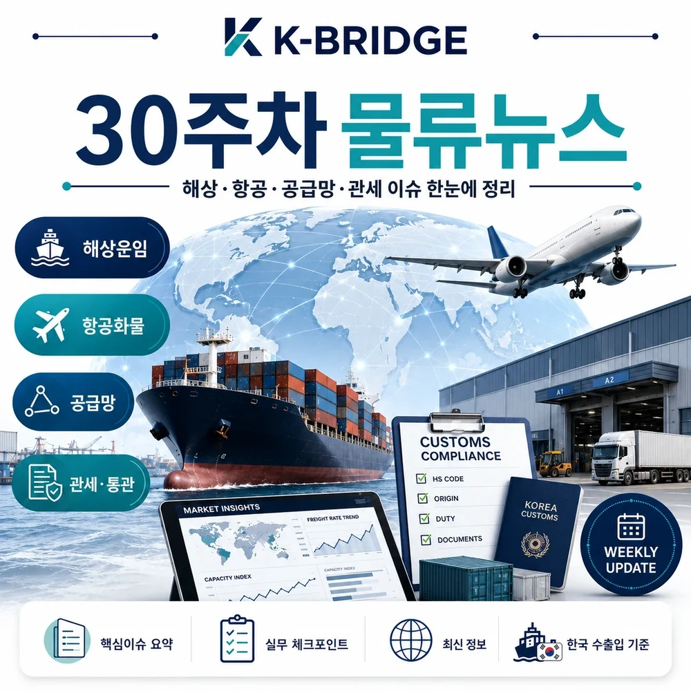
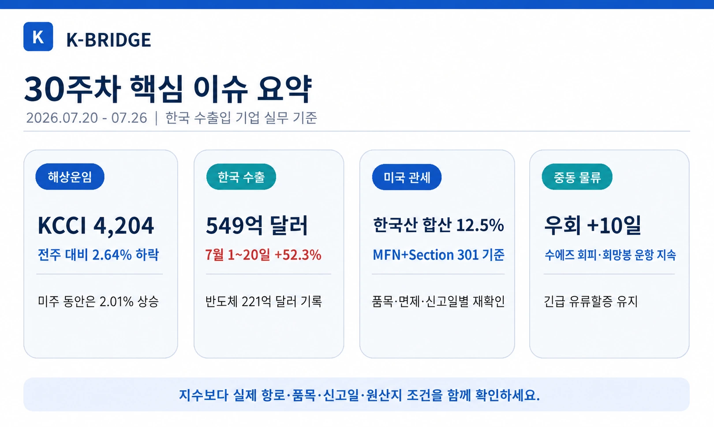
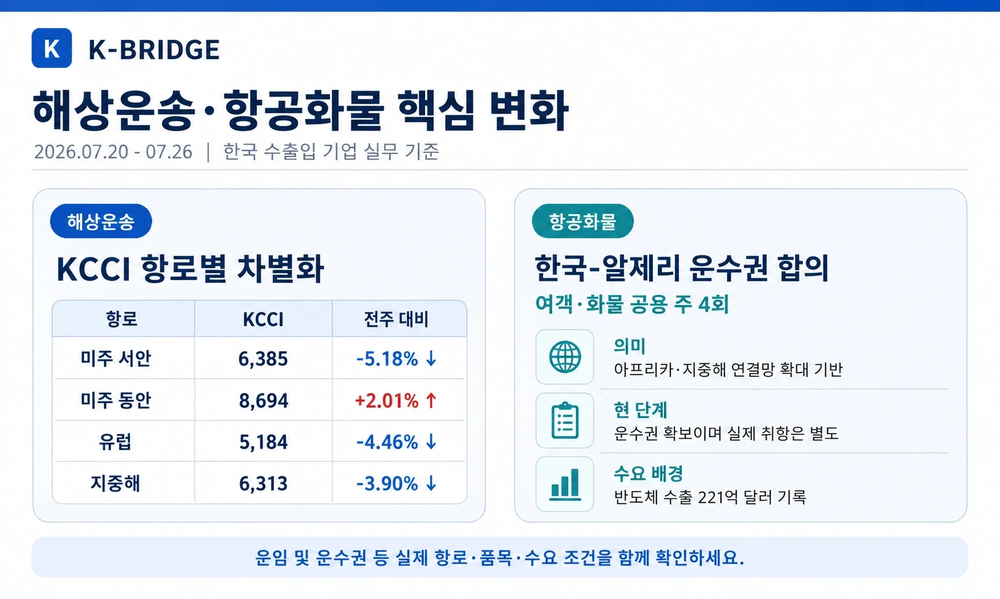
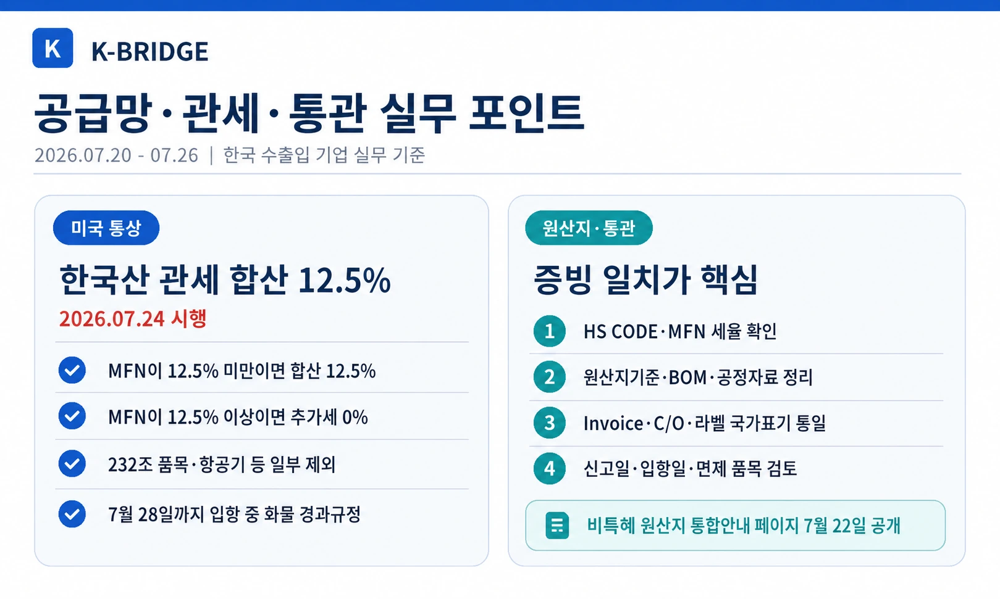
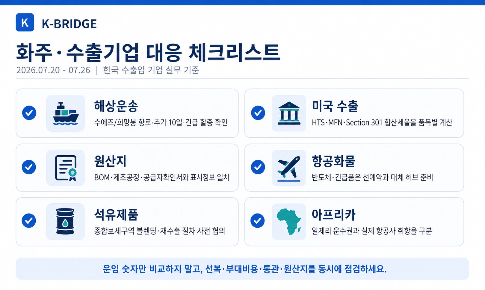

핵심 요약
30주차 물류시장은 한국발 해상운임의 조정 속 항로별 엇갈림, 7월 1~20일 수출과 반도체 수출의 역대 최대 기록, 미국의 한국산 제품 Section 301 관세 시행, 수에즈 회피와 중동 긴급 할증의 지속이 핵심입니다.

30주차 시장 한눈에 보기
KCCI 종합지수는 전주보다 낮아졌지만 미주 동안과 호주 항로는 상승했습니다. 동시에 7월 1~20일 한국 수출이 역대 최대를 기록하고 미국의 새로운 Section 301 관세가 시행되면서, 운임 조정과 통상비용 상승을 함께 관리해야 하는 주간이 됐습니다.
| 항로·지표 | 2026.07.20 | 전주 대비 | 실무 해석 |
|---|---|---|---|
| KCCI 종합 | 4,204 | -2.64% | 전반적 조정이나 고운임 구간 지속 |
| 미주 서안 | $6,385/FEU | -5.18% | 조정폭 확대, 선사별 조건 재비교 필요 |
| 미주 동안 | $8,694/FEU | +2.01% | 장거리 운항과 우회 리스크 반영 |
| 유럽 | $5,184/FEU | -4.46% | 지수 하락에도 수에즈 우회비용 지속 |
| 지중해 | $6,313/FEU | -3.90% | 중동 정세·전쟁위험 할증 확인 필요 |
지표 기준: KCCI는 부산발 40피트 컨테이너 현물운임을 중심으로 집계합니다. 실제 운임은 선사, 출항일, 장비 수급, Free Time과 각종 부대비용에 따라 달라질 수 있습니다.

해상운송·중동 물류 이슈
KCCI 4,204 - 미주 서안·유럽은 하락, 미주 동안은 상승
7월 20일 KCCI 종합지수는 4,204로 전주 4,318보다 114포인트 낮았습니다. 미주 서안은 5.18%, 유럽은 4.46%, 지중해는 3.90% 하락했지만 미주 동안은 2.01%, 호주는 5.94% 상승했습니다. 종합지수의 하락을 전체 항로 운임 하락으로 해석하면 안 됩니다.
중동 해운 정상화 지연 - 희망봉 우회와 긴급 할증 지속
글로벌 포워더 업계는 호르무즈 해협 제한과 수에즈 운하 회피가 이어져 단기간 내 광범위한 정상화가 어렵다고 평가했습니다. 아시아-유럽 선박이 희망봉을 우회하면 약 10일이 추가되고, 해상·항공·육상 운송의 긴급 유류할증도 당분간 유지될 가능성이 큽니다.
환적 석유제품 블렌딩·재수출 특례 시행
관세청은 7월 20일부터 국내 탱크터미널에 보관된 환적 석유제품을 블렌딩한 뒤 수출할 수 있도록 특례절차를 마련했습니다. 여수·울산의 종합보세구역 인프라를 활용해 수요국의 환경기준과 제품 규격에 맞춘 석유제품을 제조·재수출할 수 있는 길이 확대됩니다.
항공화물·수출 물동량
한국-알제리 여객·화물 주 4회 운수권 합의
한국과 알제리는 양국 모든 공항을 대상으로 여객·화물 공용 운수권을 주 4회 설정하기로 합의했습니다. 알제리를 아프리카와 지중해 인접 시장을 연결하는 항공망으로 활용할 기반이 마련됐지만, 이는 운수권 확보 단계이며 실제 정기편 취항 일정은 항공사 결정이 필요합니다.
7월 1~20일 반도체 수출 221억달러 - 해당 기간 역대 최대
관세청 잠정치에서 7월 1~20일 전체 수출은 549억달러로 전년 동기보다 52.3% 늘었고, 반도체 수출은 221억달러로 7월 1~20일 기준 역대 최대를 기록했습니다. 고가·납기 민감 전자화물의 항공 및 Sea&Air 수요가 유지될 수 있어 선복을 조기에 확보할 필요가 있습니다.

관세·통상·원산지 이슈
미국, 한국산 제품에 Section 301 관세 적용 - 합산세율 12.5%
미국 무역대표부는 강제노동 상품 수입금지 조치와 관련한 Section 301 최종조치를 7월 24일부터 시행했습니다. 한국산 대상품목은 일반관세(MFN)가 12.5%보다 낮으면 MFN과 Section 301을 합해 12.5%가 되며, MFN이 이미 12.5% 이상이면 Section 301 추가세는 0%입니다.
모든 한국산에 12.5% 추가되는 것은 아님 - 면제·경과규정 확인
자동차·철강·알루미늄·구리 등 이미 Section 232 적용을 받는 품목, 항공기와 일부 부품, 핵심광물 등은 이번 조치의 제외 목록에 포함됩니다. 시행 전 선적돼 7월 28일 오전 0시 1분(미 동부시간) 이전 미국에 입항한 화물에는 경과규정이 적용될 수 있으므로 신고일과 입항일을 확인해야 합니다.
비특혜 원산지 판정 통합안내 페이지 공개
관세청 FTA 포털은 7월 22일 비특혜 원산지 판정의 개요, 완전생산·실질적 변형·단순가공 기준, 판정 흐름도, 질의회신 사례, 신청절차와 구비서류를 한곳에 정리한 안내 페이지를 공개했습니다. 관세율이 원산지별로 달라지는 시장에서는 BOM과 제조공정 증빙의 중요성이 더 커집니다.
관세청 해외통관제도 설명회 - 미국·EU·중국 등 8개국 변화 안내
관세청은 수출기업을 대상으로 미국의 세관 집행강화, EU 관세개혁과 전자상거래 통관체계, 중국 무역원활화, 인도 품목분류 분쟁 등 주요 교역국의 통관환경과 유의사항을 안내했습니다. 해외 통관 전 현지 수입자와 신고 책임, 서류 보관주체를 명확히 해야 합니다.
관세 주의: 이번 미국 조치를 ‘모든 한국산에 12.5% 추가관세’로 계산하면 과대 산정될 수 있습니다. HTS CODE, 기본 MFN 세율, 제외 목록, 다른 Section 232·301 조치, 입항·신고 시점을 품목별로 확인해야 합니다.
국내 물류·해운 제도
선내 안전·보건 기준 개정 - 현장 운영 절차 명확화
해양수산부는 7월 20일 선내 안전·보건 기준을 개정했습니다. 일반의약품 투약 절차, 안전보건 대표자의 선임 방식, 청력보존 프로그램 요건 등을 현실에 맞게 정비해 선사와 선박관리회사의 현장 혼선을 줄이는 데 초점을 맞췄습니다.
이번 주 추가 물류 동향

화주·수출기업 대응 체크리스트
- 해상운송: KCCI 종합보다 실제 항로·선사·출항일의 운임과 장비·Free Time을 확인합니다.
- 유럽·지중해: Suez/Cape 항로, 약 10일의 우회 리드타임, 전쟁위험·긴급유류 할증을 확인합니다.
- 미국 수출: HTS CODE의 MFN 세율과 Section 301을 합산해 실제 세율을 계산합니다.
- 면제·경과규정: Section 232 대상, 항공기·핵심광물 등 제외 품목과 입항·신고일을 점검합니다.
- 원산지: BOM, 제조공정, 공급자확인서, Invoice, C/O와 제품 라벨의 국가표기를 통일합니다.
- 항공화물: 반도체·전자부품은 선예약하고 대체 허브·Sea&Air 경로를 준비합니다.
- 아프리카: 알제리 운수권 확보와 실제 정기편 취항을 구분해 스케줄을 확인합니다.
- 석유제품: 종합보세구역의 블렌딩 허용 품목, 작업·신고·재수출 절차를 세관 및 터미널과 사전 협의합니다.
미국 관세와 중동 우회비용까지 포함해 실제 물류비를 확인하세요
케이브릿지는 해상·항공·해외특송·국내운송과 통관 조건을 함께 검토해 품목과 납기에 맞는 운송안을 안내합니다.